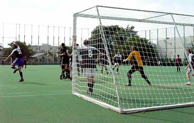

St Marys International School
|


|
|
|
- Surface: Small artificial pitch(smaller than regulation). Hibernian's home ground. 9:00am - 5:00pm, cannot be used during baseball season (mound in place!).
- Facilities: Changing area outside & toilets, no showers or lockers. Vending machines outside of ground for drinks.
- Parking: Very little, best near station.
- Location: 10 minutes walk from Futako Tamagawa Station on the Den-en-toshi & OiMachi Lines.
MAP
- Rules: NO PARKING IN THE STREETS AROUND THE GROUND & SCHOOL. Local residents do ask the police to remove cars! Please also remember this is
a school, with Families around, watch your language!
When teams & supporters leave after the match, they will make sure to clean up around the ground and changing rooms, removing all rubbish.
Please follow all regulations at grounds (especially smoking!)
|
|